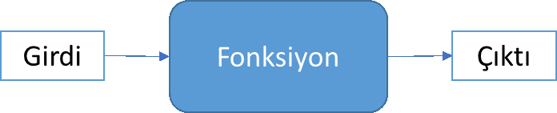
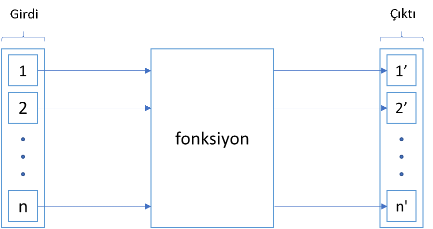
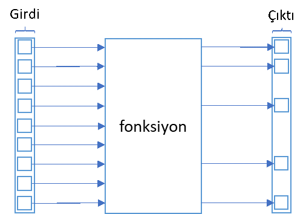
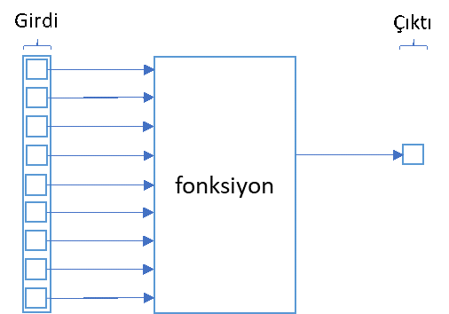

6. Fonksiyonlar#
Siz veya bir arkadaşınızın bilgisayarda aynı işi sürekli olarak tekrarladığına birçok kez tanık olmuşsunuzdur. Aslında, bir çoğumuzun işinin önemli bir parçası, rutin işleri tekrarlamaktan ibarettir. Birçok çalışanın örneğin excel programını kullanarak günlük, haftalık, aylık aralıklarda aynı işleri tekrar tekrar aynı şekilde yapması iş hayatında sık görülen bir durumdur. Bu sadece excel için değil programlama dilleri için de geçerli olabilir. Aynı iş için aynı kodları tekrar tekrar yazıyor ya da daha önce yazdığınız kodları kopyala yapıştır yöntemi ile alıp varsa gerekli değişiklikleri yaptıktan sonra kullanıyor olabilirsiniz.
Bir işlemi aynı şekilde tekrar tekrar yapıyorsanız, en mantıklı olan bu işi otomatikleştirmektir. Örneğin, işinizin bir parçası, txt a da excel gibi farklı formatlarda kaydedilmiş dosyaları açıp buradaki belirli bilgileri kullanarak bir takım hesaplama veya raporlamalar yapmak olabilir. Bunun için her defasında aynı işlemleri tekrarlamak yerine bunları otomatik olarak yapacak bir kod yazmak işinizi çok daha hızlı hale getirecek ve size zaman kazandıracaktır. Aslında, aynı işi ikiden fazla defa tekrarlayacaksanız, en mantıklısı bu işi sizin yerinize yapacak bir kod yazmaktır. Bunun için de fonksiyonlardan faydalanmanız gerekir.
Fonksiyon farklı şekillerde tanımlanabilir. Programcılıkta kullanılan fonksiyon tanımı matematikteki tanımına benzer. Fonksiyon, bir A kümesinin her elemanını bir B kümesinin bir ve yalnız bir elemanına eşleyen ilişki olarak tanımlanır. Bir diğer deyişle, fonksiyon aldığı her bir girdiden tek bir çıktı üreten ilişkidir.
Programcılıkta da fonksiyon aynı görevi görür. Bir fonksiyon, kendisine iletilen verileri alır ve bu verileri istenilen işlemlerden geçirdikten sonra ürettiği çıktıyı iletir.

Çok basit bir örnek düşünelim. Amacımız, bir sayı dizisindeki sayıların ortalamasının bulunması olsun.
x = [3, 5, 6, 7, 8, 9, 12, 15, 20]
x
[3, 5, 6, 7, 8, 9, 12, 15, 20]
Ortalamayı hesaplamanın en basit yöntemi tabii ki sayıları tek tek toplayıp toplamı da sayı adedine bölmektir.
(3 + 5 + 6 + 7 + 8 + 9 + 12 + 15 + 20) / 9
9.444444444444445
Ya da sayı dizisinde kaç sayı olduğunu biliyorsak sayıları tek tek yazmak yerine liste indeksini kullanabiliriz.
(x[0] + x[1] + x[2] + x[3] + x[4] + x[5] + x[6] + x[7] + x[8]) / 9
9.444444444444445
Bunun için tabii ki Python’a ihtiyacımız yok. Kâğıt kalem ya da hesap makinesi ile de yapabiliriz. Peki ya dokuz tane değil de 200 tane sayı olsaydı ne yapacaktık?
Python’dan biraz yardım isteyelim. Yukarıda ortalamayı üç adımda bulduk. Önce listedeki sayıları topladık. Daha sonra kaç adet sayı olduğunu bulduk. Bu iki adım farklı sırada veya aynı anda da olabilir. Son olarak bulduğumuz toplamı sayı adedine bölerek ortalama değeri bulduk. Bu işlemleri bizim yerimize yapacak bir program yazalım.
x = [3, 5, 6, 7, 8, 9, 12, 15, 20]
adet = 0
toplam = 0
for i in x:
adet += 1
toplam += i
print (toplam/adet)
9.444444444444445
Yukarıdaki program zaten son derece kolay ve anlaşılır. Bu program kullanarak liste ne kadar uzun olursa olsun kolaylıkla ortalama değeri bulabiliriz. Ama hala bir sorunumuz var. Her defasında aynı kodu tekrar yazmak ya da kopyalayıp yapıştırmak gerekiyor. Yukarıdaki örnekte yazığımız kod sadece 6 satır olduğu için çok fazla problem olmayabilir ama aynı işi yapmak için yüzlerce satırlık bir kodu her defasında kopyalayıp yapıştırmak da verimli bir yöntem olmayacaktır.
Bunun çözümü de yukarıdaki kodu bir fonksiyonun içine almak ve istediğimiz zaman fonksiyonu kullanmaktır. Bu anlamda fonksiyonu belirli bir işlemi gerçekleştiren ve tekrar tekrar kullanılabilen program olarak tanımlayabiliriz. Örneğin yazacağımız bir ortalama fonksiyonunu kullanarak x listesindeki sayıların ortalama değerini bulabilmeliyiz. Örneğin, fonksiyonumuzun adı ortalama() ise yukarıdaki kodu tekrar yazmadan ortalama(x) yazmak bize istediğimiz sonucu vermeli. Yazdığımız bir fonksiyonu farklı programlardan çağırma konusunu izleyen bölümde göreceğiz.
Aslında şimdiye kadar hazır Python fonksiyonlarından bir kısmını kullandık. Önceki bölümlerde gördüğümüz, help(), print(), str(), bool(), max(), len() komutları birer fonksiyon örneğidir. Python’da bu şekilde çok sayıda yerleşik (built-in) fonksiyon mevcuttur.
6.1. Fonksiyon Tanımlama#
Python’da fonksiyonlar def anahtar kelimesi kullanılarak tanımlanır. Satır başına def yazdıktan sonra kullanacağımız fonksiyonun adını ve parantez içinde argümanların yani girdilerin adlarını yazmalıyız. Bir fonksiyon hiç girdi almayabilir, bir adet girdi alabilir ya da birden fazla sayıda girdi alabilir. Satır sonuna, döngülerde olduğu gibi iki nokta (:) koyduktan sonra alt satırda aynı şekilde içeriden başlıyoruz.
Hiç argüman almayan fonksiyon da tanımlayabileceğimizi belirtmiştik. Önce en basit fonksiyon tipi olarak tanımlayabileceğimiz hiç argüman almayan bir fonksiyon yazalım.
def tebrikler():
print ("Tebrikler! İlk Python fonksiyonunuzu yazdınız.")
tebrikler()
Tebrikler! İlk Python fonksiyonunuzu yazdınız.
Fonksiyonun hiç argümanı olmasa dahi fonksiyon adından sonra mutlaka parantez olması gerektiğine dikkat edin.
Şimdi de girdi olarak bir sayıyı kabul eden fonksiyon örneği düşünelim. Örneğin, verilen herhangi bir sayıyı 5 ile çarpan bir fonksiyon yazabiliriz.
def bes_kati(x):
y = 5 * x
print(y)
bes_kati(12)
60
Fonksiyonda x, argüman ya da girdi olarak isimlendirilir. Parantez içine x yazarak fonksiyonun herhangi bir sayıyı girdi olarak kabul edebileceğini belirtmiş oluyoruz. Bu fonksiyon, verilen bir sayının beş katını hesaplayıp yazdırıyor. Ama herhangi bir sonuç üretmiyor. Çoğu zaman bir fonksiyonun bulduğu sonucu saklayıp tekrar kullanmak isteyebilirim. Örneğin, yukarıdaki örnekte fonksiyon verilen sayının beş katını hesapladıktan sonra bulunan sonucu program içinde tekrar kullanmak isteyebilirim. Bir fonksiyonun ürettiği sonucun saklanabilir olması için return anahtar kelimesini kullanmalıyım. Böylece fonksiyonun hesapladığı sonucu başka bir değişkene atayarak saklayabilir ve daha sonra kullanabilirim. Bulunan sonucu daha sonra tekrar kullanmanın yolu ise onu bir değişkene atamaktır.
def bes_kati(x):
y = 5 * x
return y
k = bes_kati(12)
print(k)
60
Bir fonksiyonun argümanı sayısal ya da metin tipinde tek bir veri olabileceği gibi liste veya sözlük gibi bir veri yapısı da olabilir.
def ortalama(liste):
adet = 0
toplam = 0
for i in liste:
adet += 1
toplam += i
orta = toplam / adet
return orta
Fonksiyonu kullanmak içinse fonksiyon adı ve parantez içinde kullanmak istediğimiz argümanı yazmamız gerekiyor. Buradaki örnekte x listesinde yer alan sayıların ortalamasını alacağımız için parantez argüman olarak x yazmalıyız.
ortalama(x)
9.444444444444445
y = ortalama(x)
y
9.444444444444445
Yukarıda da belirttiğimiz gibi bir fonksiyonun sonucunu değişkene atamak mümkündür. Örneğin, bir program içinde bir listedeki en büyük değeri bulan bir fonksiyonu kullanarak bulunan sonucu başka bir değişkene atayarak kullanabiliriz.
liste = [1, 4, 6, 7, 12, -5]
x = max(liste)
y = min(liste)
6.2. Değişken Argümanlar#
Şimdiye kadar tanımladığımız fonksiyonlar sadece bir argüman alıyordu. Aşağıda önce sadece bir argüman alan fonksiyonla başlayalım.
def kare_al(x):
return x**2
print(kare_al(12))
144
Fonksiyonu bu şekilde tanımlarsak verilen bir sayının sadece karesini alabiliriz. Sayının, üçüncü, dördüncü ve başka sayılarla üssünü hesaplamak için ayrı ayrı fonksiyonlar mı tanımlamak gerekiyor? Tabii ki hayır. Öyle bir fonksiyon yazalım ki verilen bir sayının, istenen herhangi bir sayıya göre üssünü hesaplasın. Bunun için fonksiyona iki argüman tanımlamak gerekiyor. Üssünü almak istediğimiz sayı ve üs derecesi. Neyse ki Python bir fonksiyonun istediğimiz kadar argüman almasına izin veriyor.
def us_alma(x,y):
return x**y
print(us_alma(x = 4,y = 3))
64
Fonksiyonu kullanırken parantez içinde değişkenlere atanacak argümanları x = 4 ve y = 3 olarak belirttik. Ancak burada mutlaka x ve y yazmak zorunda değiliz. Bunun yerine us_alma(4, 3) şeklinde de yazabilirdik. Fonksiyonu tanımlarken değişkenlerin sırasını x, y olarak yazmıştık. Bu nedenle, fonksiyonu çağırdığımızda yazdığımız argüman değerleri de bu sırada alınır ve ilk sıradaki argüman x, ikinci sıradaki argüman da y olarak kabul edilir.
us_alma(4, 3)
64
Böylece, bir sayının sadece ikinci dereceden değil istediğimiz herhangi bir dereceden üssünü almak mümkün olabilir. Ama diyelim ki bu fonksiyonu çok fazla kullanıyorum ve çoğu zaman da ikinci dereceden üs alıyorum. Diğer dereceleri nadiren kullanıyorum. Öyle bir fonksiyon olsun ki y için herhangi bir değer girmezsem sayının karesini alsın. Ancak başka bir derece kullanmak istersem y yerine bir sayı gireyim.
Python, argümanlar için varsayılan değer belirlenmesine de izin vermektedir. Yukarıdaki fonksiyonu aşağıdaki şekilde tanımlarsam fonksiyonu her kullandığımda y yerine bir değer girmek zorunda kalmam. Bu durumda Python, y argümanının için varsayılan değer yani ikiye eşit olduğunu kabul eder. Ancak y için bir değer girersem bu değeri esas alır. Argümanlar için varsayılan değer atamanın faydası özellikle çok sayıda argüman alan fonksiyonlarda ortaya çıkmaktadır. Kimi zaman çok sayıda argümanı olan fonksiyonlar kullanmak zorunda kalabiliriz. Bu fonksiyonlarda her defasında her argüman için bir değer yazmak zorunda kalmamak için mümkün olan argümanlara varsayılan değer atamak sonraki kullanımlarda zaman kazandıracaktır.
def us_alma(x, y = 2):
return x**y
print(us_alma(13))
169
print(us_alma(3,3))
27
Varsayılan argümanların yanı sıra Python’un bir başka özelliği de esnek argümanlara izin vermesidir. Diyelim ki bir fonksiyon yazacağız ama fonksiyon farklı sayıda ya da türde argümanı kabul edebilsin istiyoruz. Python buna izin vermektedir. Bir fonksiyonda esnek argümanlar kullanabilmek için fonksiyonu tanımlarken argüman olarak *args yazmamız gerekiyor. Örnek olarak verilen tüm sayıları çarpan bir fonksiyon yazmak isteyelim.
def carpim(*args):
sonuc = 1
for sayi in args:
sonuc = sonuc * sayi
print(sonuc)
carpim(2,3,4)
24
carpim(2,3,4,5,6)
720
Yukarıdaki örnekte de görüldüğü gibi esnek sayıda argüman tanımlamak istiyorsak fonksiyon tanımında argüman olarak *args yazmamız gerekiyor. Ancak fonksiyon gövdesinde argümanı kullanırken sadece args yazmamız gerekiyor.
Şimdi de yazdığımız kelimeleri birleştirecek bir fonksiyon yazalım. Ancak ilerde fonksiyonu kullanırken her defasında farklı sayıda kelime kullanacağımız için istediğimiz kadar kelime yazabilelim istiyoruz. Bunun için de yine *args argümanını kullanmamız gerekiyor.
def birlestir(*args):
sonuc = ""
for kelime in args:
sonuc = sonuc + kelime
return sonuc
print(birlestir("Millet ", "Meclisi"))
Millet Meclisi
print(birlestir("Büyük ", "Millet ", "Meclisi"))
Büyük Millet Meclisi
print(birlestir("Türkiye ", "Büyük ", "Millet ", "Meclisi"))
Türkiye Büyük Millet Meclisi
Normal argüman ile esnek argüman arasındaki farkı bir başka örnekle görmeye çalışalım.
def yaz(ilk, *args):
print("İlk argüman: " + ilk)
for kelime in args:
print("Esnek argüman: " + kelime)
yaz("İlker")
İlk argüman: İlker
yaz("İlker", "Eren")
İlk argüman: İlker
Esnek argüman: Eren
yaz("İlker", "Hüseyin", "Eren")
İlk argüman: İlker
Esnek argüman: Hüseyin
Esnek argüman: Eren
Yukarıdaki programla ilgili olarak bir konuya dikkat çekmek istiyorum. Argüman sayısındaki esnekliği sağlayan args kelimesi değil önüne getirilen * işaretidir. Biz de programımızda hem genel kullanıma uyumlu olması hem de akılda kalıcı olması nedeniyle *args şeklinde kullandık. Ancak programı *args yerine *abcd yazsanız da aynı sonucu alırsınız.
Python’da kullanılan bir diğer esnek argüman yapısı da değişken eleman sayısına sahip sözlük veri yapılarını işleyebilmek için kullanılan **kwargs argümanıdır. Anlaşılacağı üzere *args değişken argüman sayısı için kullanılırken **kwargs, değişken sayıda elemanı olan sözlük yapısındaki argümanları temsil eder. Bir başka deyişle anahtar kelimeleri olan argümanlar olarak da düşünebilirsiniz.
def not_yazdir(**kwargs):
for key, value in kwargs.items():
print(key + " : " + value)
not_yazdir(Ad="Eren", Soyad="Arslan")
Ad : Eren
Soyad : Arslan
not_yazdir(Ad="Eren", Soyad="Arslan", Meslek="Öğrenci")
Ad : Eren
Soyad : Arslan
Meslek : Öğrenci
Görüldüğü gibi **kwargs yapısı ile sözlük veri yapıları üzerinde eleman sayısını bilmesek dahil fonksiyon tanımlayabiliyoruz.
Python’un sunduğu kolaylıklardan birisi de birden fazla değer döndürebilen fonksiyonlar yazmaya izin vermesidir. Yani, Python’da yazdığımız bir fonksiyon iki veya daha fazla sonuç üretebilir. Bunun için daha önce gördüğümüz tuple veri yapısını kullanacağız.
Şimdi yukarıda tanımladığımız us_alma fonksiyonunu tekrar düşünelim. Fonksiyonda küçük bir değişiklik yapalım ve istenen sayının farklı iki sayıya göre üssünün ayrı ayrı üretilmesini sağlayalım. Yani öyle bir fonksiyon yazalım ki herhangi bir sayının örneğin hem karesini hem de küpünü hesaplasın ve döndürsün. Bu fonksiyon girdi olarak üç değişken kabul etmeli: taban, birinci üs ve ikinci üs. Fonksiyon gövdesinde de iki farklı hesaplama yapmalıyız: tabanın birinci değere göre üssü ve tabanın ikinci değere göre üssü. Nihayet, fonksiyon hesapladığı iki sonucu bir tuple veri nesnesi olarak iletmeli.
def us_alma(x, a, b):
us1 = x ** a
us2 = x ** b
sonuc = (us1, us2)
return(sonuc)
print(us_alma(3, 2, 4))
(9, 81)
t, k = us_alma(3,2,4)
print(t, k)
9 81
Fonksiyonun çıktısı olan tuple veri yapısını da bir başka değişkene atamak mümkündür.
sonuc = (t, k) = us_alma(3, 2, 4)
sonuc
(9, 81)
İç içe fonksiyonlar tanımlamak da mümkündür. İç içe geçmiş fonksiyonlara basit bir örnek vermek için sıcaklık dereceleri arasındaki dönüşümü örnek olarak alalım. Hepimiz ilkokulda Kelvin, Celsius ve Fahrenheit sıcaklık dereceleri arasındaki dönüşüm formüllerini görmüşüzdür. Bu sıcaklık dereceleri birbirlerine aşağıdaki formüllere göre dönüşürler.
celsius = kelvin + 273.15
fahrenheit = 1.8 * celsius + 32
Şimdi Kelvin cinsinden verilen bir sıcaklığı Fahrenheit’e çevirecek bir program yazalım. Örneğimizi verebilmek için Kelvin’den doğrudan doğruya Fahrenheit’e çevirmeyi bilmediğimizi düşünmemiz gerekiyor.
def kelvin_fahrenheit(derece):
def kelvin_celsius(kelvin_derece):
celsius_derece = kelvin_derece - 273.15
return celsius_derece
fahrenheit = 1.8 * kelvin_celsius(derece) + 32
return fahrenheit
Sadece elimizdeki iki formülü kullanarak Kelvin’den Fahrenheit’e dönüştürmek için önce Kelvin’den Celsius’a, sonra da Celsius’tan Fahrenheit’e dönüşüm işlemini gerçekleştirmemiz gerekiyor. Bu nedenle ana fonksiyonun içinde önce Kelvin’den Fahrenheit’e dönüşümü yapacak bir fonksiyon yazdık (satır 3). Sonra da ana fonksiyon içinde Celsius’tan Fahrenheit’e dönüşüm formülünü yazıyoruz. Satır 7’de belirtilen kelvin_celsius(derece) ifadesi Kelvin cinsinden derecenin Celsius karşılığını veriyor. Bunun için de ana fonksiyonun içindeki diğer fonksiyonu kullanıyor.
İç içe fonksiyonlara bir başka örnek verelim. Daha önce üs alma ile ilgili fonksiyon yazmıştık. Aşağıda daha farklı bir üs alma fonksiyonu yer alıyor.
def us_al(n):
def ussu(x):
sonuc = x ** n
return sonuc
return ussu
Örnekte, ana fonksiyona argüman olarak üs olacak sayıyı veriyoruz. Ancak tabanı alt fonksiyonda belirtiyoruz. Ana fonksiyon ise alt fonksiyonu döndürüyor. Bu fonksiyondan, istediğimiz kuvvette üsler alacak fonksiyonlar üretebiliriz. Aşağıda görüldüğü gibi kare ve kup değişkenlerini tanımlayarak aslında iki yeni fonksiyon üretiyoruz.
kare = us_al(2)
kup = us_al(3)
print(kare(5))
print(kup(5))
25
125
6.3. Lambda Fonksiyonları#
Konu hakkında daha önce bilgi sahibi değilseniz muhtemelen okuduğunuz başlık size hiçbir şey çağrıştırmamıştır. Python’da anlık fonksiyonlar tanımlayıp kullanmak mümkündür. Bir başka deyişle bunlara satır içi fonksiyonlar da diyebiliriz. Program içinde hızlıca kısa bir fonksiyon tanımlamamız gerekirse bu yönteme başvurabiliriz. Hatta lambda fonksiyonlarına isim vermemiz bile gerekmez. Ancak, lambda fonksiyonların kullanımı her zaman önerilmez. Örneğin karmaşık bir fonksiyon kullanacaksanız, fonksiyonda koşul ifadeleri ya da döngüler kullanacaksanız muhtemelen lambda fonksiyonu çok kullanışlı olmayacaktır. Lambda fonksiyonu genel olarak aşağıdaki şekilde yazılır.
lambda argümanlar : fonksiyon ifadesi
Argümanlar birden fazla ise aralarına virgül konulur. Aşağıda bazı lambda fonksiyonu örnekleri verilmiştir.
kare = lambda x : x**2
kare(5)
25
us = lambda x,y : x**y
us(4,3)
64
fahrenheit_cevir = lambda C : 1.8 * C + 32
fahrenheit_cevir(35)
95.0
tekrarla = lambda kelime, adet : kelime * adet
tekrarla("Python ", 3)
'Python Python Python '
Lambda fonksiyonlarının en çok kullanışlı olduğu kullanım alanı, bunları map(), reduce() ve filter() fonksiyonları ile birlikte kullanmaktır. Lambda fonksiyonlarının bu fonksiyonlarla birlikte kullanımına geçmeden önce bunların kullanımını görelim.
map() fonksiyonu, verilen bir listedeki bütün elemanlara aynı fonksiyonu uygulamak için kullanılır. Bu fonksiyon iki argüman alır: bir fonksiyon ve bu fonksiyonun uygulanacağı bir dizi. Map, dizideki her elemanı alır ve bu elemanı verilen fonksiyondan geçirir.
map(fonksiyon,girdi)

Örneğin bir listedeki bütün elemanların karesini almamız gerekiyorsa, bunun için for ya da while döngüsü uygulamak yerine hızlıca map fonksiyonu uygulayabiliriz.
def kare(x):
return x**2
sayilar = [2,3,4,5]
sonuc = map(kare, sayilar)
sonuc_listesi = list(sonuc)
print(sonuc_listesi)
[4, 9, 16, 25]
Yukarıdaki örnekte birinci ve ikinci satırlarda kare() adında basit bir fonksiyon tanımladık. Dördüncü satırda ise fonksiyonu kullanmak istediğimiz diziyi tanımladık. Bu bir liste olabileceği gibi bir tuple ya da başka bir dizi de olabilir. Altınca satırda kullandığımız map() fonksiyonunun sonucunu bir değişkene atıyoruz. Map fonksiyonu bir map nesnesi üretir. Ne yazık ki map nesnesi doğrudan yazdırılabilir ya da erişilebilir bir nesne değildir. Üretilen sonucu kullanabilmek için bunu bir küme veya listeye çevirmek gerekir. Bunu da set() ya da list() fonksiyonları ile gerçekleştirebiliriz (7. Satır). Satır 6 ve 7’yi aşağıdaki şekilde de birleştirebilirdik.
sonuc = list(map(kare, sayilar))
Şimdi de map fonksiyonu içinde lambda fonksiyonunu nasıl kullanabileceğimizi görelim. Yine yukarıdaki örnekte görüldüğü gibi kullandığımız kare fonksiyonu aslında çok basit bir fonksiyon. Bunun için def anahtar kelimesini kullanarak ayrı bir fonksiyon tanımlamak yerine map() fonksiyonu içinde satır arasında hızlıca bir lambda fonksiyonu tanımlayabiliriz.
sayilar = [2,3,4,5]
sonuc = list(map(lambda x : x**2, sayilar))
print(sonuc)
[4, 9, 16, 25]
Bir diğer kullanışlı fonksiyon olan filter() fonksiyonu, adından da anlaşılacağı üzere veriler arasında filtreleme yapmak yani belirli bir şartı sağlayan verileri bulmak için kullanılır. Filter fonksiyonu da map fonksiyonu gibi iki argüman alır: doğru ya da yanlış (True, False) değerler üreten bir fonksiyon ve bu fonksiyonun uygulanacağı bir dizi.
filter(fonksiyon, dizi)

def teksayi(x):
if x % 2 == 0:
return False
else:
return True
sayilar = [3, 7, 12, 17, 43, 16, 29, 81, 64, 42]
tekler = list(filter(teksayi,sayilar))
print(tekler)
[3, 7, 17, 43, 29, 81]
Aynı kodu bu defa lambda fonksiyonu kullanarak yazmaya çalışalım.
sayilar = [3, 7, 12, 17, 43, 16, 29, 81, 64, 42]
tekler = list(filter(lambda x: x % 2 == 1, sayilar))
print(tekler)
[3, 7, 17, 43, 29, 81]
Aşağıdaki örnekte de verilen kelimeler arasında belirli bir uzunluktan fazla olanları buluyoruz.
liste = ['Adıyaman', 'Ankara', 'Balıkesir', 'Kahramanmaraş', 'Iğdır']
iller = list(filter(lambda x: len(x) > 7, liste))
print(iller)
['Adıyaman', 'Balıkesir', 'Kahramanmaraş']
Son olarak da reduce() fonksiyonunu görelim. Reduce fonksiyonu da map() gibi verilen bir üzerinde bir fonksiyon uygular. Ancak, map fonksiyonundan farklı olarak reduce fonksiyonu verilen liste üzerinde bir işlem uyguladıktan sonra tek bir sonuç iletir. Yalnız, diğer iki fonksiyondan farklı olarak reduce fonksiyonunu functools paketinden aktarmak gerekmektedir. Ayrıca, bu fonksiyonun ürettiği nesneyi doğrudan yazdırabiliyoruz. Diğerlerinde olduğu gibi önce list() veya set() ile yazdırılabilir bir nesneye çevirmemize gerek yok.
from functools import reduce
reduce(fonksiyon, dizi)

Artık map(), filter() ve reduce() fonksiyonlarının nasıl çalıştığını gördüğümüze göre reduce fonksiyonunun kullanımına bir örnek verebiliriz.
from functools import reduce
ekip = ['Ayten', 'Ali', 'Mehmet', 'Yağız', 'Baran', 'Özlem']
butun_ekip = reduce(lambda ekip1, ekip2: ekip1 + ", " + ekip2, ekip)
print(butun_ekip)
Ayten, Ali, Mehmet, Yağız, Baran, Özlem
Benzer şekilde bir dizideki elemanların toplamını ya da çarpımını bulmak için de reduce ve lambda fonksiyonlarını kullanabiliriz.
from functools import reduce
sayilar = [5, 7, 8, 3, 5]
carpim = reduce(lambda x1, x2: x1*x2, sayilar)
print(carpim)
4200
Gördüğünüz gibi doğru kullanıldığında lambda fonksiyonları, map, filter ve reduce fonksiyonları ile birlikte bizi for ve while döngüleri kullanmadan birçok işi çok daha hızlı bir şekilde yapmamızı sağlayabilir.
6.4. Fonksiyonlarda Kapsama#
Fonksiyonları anlatırken değinmeden geçmememiz gereken önemli bir konu da fonksiyonlarda kapsam konusudur. Kapsamdan kastımız, bir Python programında tanımlanan ya da kullanılan nesnelerin programın hangi bölümlerinden erişilebilir olduğudur. Programda kullanılan tüm nesnelere programın her yerinden erişilemez.
Bir Python programında üç tür kapsamadan söz edebiliriz.
Genel Kapsam (Global Scope): Nesnelerden bir kısmı yazdığımız programın ana gövdesinden erişilebilir nesnelerdir. Bu nesneler genel gövdede tanımlanmıştır.
Yerel Kapsam (Local Scope): Bir fonksiyonun içinde tanımlanan ve yine fonksiyon içinden erişilebilen nesneler yerel kapsamdaki nesnelerdir. Bir fonksiyonun içinde tanımlanan değişkenler sadece fonksiyon içinde kullanılır ve fonksiyonun kullanılması bittiğinde de ortadan kalkar.
Gömülü Kapsam (Built-in Scope): Python standart kütüphanesinde yer alan builtins modülünde yer alan nesnelerdir. Python’da tanımlanmış olan tüm fonksiyonlar, örneğin, help(), max(), min() gibi fonksiyonlar gömülü (built-in) kapsamdaki nesnelerdir.
Şimdi önceki bölümde de kullandığımız aşağıdaki fonksiyona bakalım.
def us_alma(x, y):
sonuc = x ** y
return sonuc
print(sonuc)
NameError: name 'sonuc' is not defined
Görüldüğü gibi fonksiyon içinde tanımladığımız sonuc değişkenine fonksiyon dışından erişmeye çalıştığımızda hata mesajı ile karşılaşıyoruz. Bu değişkene sadece yerel kapsama alanından ulaşabiliyoruz.
Bu duruma bir başka örnek verelim. Fonksiyonu çağırmadan önce bir sonuc değişkeni tanımlayım değişkene bir değer atayalım.
sonuc = 50
def us_alma(x, y):
sonuc = x ** y
return sonuc
print(us_alma(5, 3))
125
print(sonuc)
50
Görüldüğü gibi print(sonuc) komutunu verdiğimizde fonksiyon içinde hesaplanan sonuc değeri değil, fonksiyon dışında tanımladığımız sonuc değeri yazdırılıyor. Yerel kapsamda tanımlanan bir nesneye genel kapsamdan ulaşılamadığını görmüş olduk. Ancak bunun tersi doğru değildir. Genel kapsamda tanımlanan bir nesneye yerel kapsamdan yani bir fonksiyon ya da modülün içinden ulaşılabilir. Bir fonksiyonun içinde kullandığımız bir nesne önce fonksiyon içinde aranır. Burada bulunamaz ise genel kapsama bakılır. Genel kapsamda da bulunamaz ise gömülü kapsama bakılır. Şimdi yukarıdaki fonksiyonu biraz değiştirerek aşağıdaki gibi yazalım.
us = 3
def us_alma(x):
sonuc = x ** us
return sonuc
print(us_alma(5))
125
Fonksiyon içinde us değişkeni kullanılıyor. Ancak fonksiyonun ne tanımında ne de gövdesinde us değişkeni tanımlanmış değil. Bu nedenle, genel kapsama bakılıyor. Genel kapsamda tanımlanmış bir us değişkeni bulunuyor ve hesaplamada bu değişken kullanılıyor.
Fonksiyon metni içinde genel kapsamdaki bir nesneyi değiştirmek istersek global anahtar kelimesini kullanmamız gerekiyor. Bu durumda fonksiyon içinden yapılan değişiklik genel kapsamda de geçerli olur.
us = 3
def us_alma(x):
global us
us = us + 1
sonuc = x ** us
return sonuc
print(us_alma(5))
625
print(us)
4
Gömülü kapsamdaki nesneleri görmek için builtins modülünü içeri aktarmamız gerekir. Aşağıda bu nesnelerin bir kısmı gösterilmiştir.
import builtins
dir(builtins)
['ArithmeticError',
'AssertionError',
'AttributeError',
'BaseException',
'BaseExceptionGroup',
'BlockingIOError',
'BrokenPipeError',
'BufferError',
'BytesWarning',
'ChildProcessError',
'ConnectionAbortedError',
'ConnectionError',
'ConnectionRefusedError',
'ConnectionResetError',
'DeprecationWarning',
'EOFError',
'Ellipsis',
'EncodingWarning',
'EnvironmentError',
'Exception',
'ExceptionGroup',
'False',
'FileExistsError',
'FileNotFoundError',
'FloatingPointError',
'FutureWarning',
'GeneratorExit',
'IOError',
'ImportError',
'ImportWarning',
'IndentationError',
'IndexError',
'InterruptedError',
'IsADirectoryError',
'KeyError',
'KeyboardInterrupt',
'LookupError',
'MemoryError',
'ModuleNotFoundError',
'NameError',
'None',
'NotADirectoryError',
'NotImplemented',
'NotImplementedError',
'OSError',
'OverflowError',
'PendingDeprecationWarning',
'PermissionError',
'ProcessLookupError',
'RecursionError',
'ReferenceError',
'ResourceWarning',
'RuntimeError',
'RuntimeWarning',
'StopAsyncIteration',
'StopIteration',
'SyntaxError',
'SyntaxWarning',
'SystemError',
'SystemExit',
'TabError',
'TimeoutError',
'True',
'TypeError',
'UnboundLocalError',
'UnicodeDecodeError',
'UnicodeEncodeError',
'UnicodeError',
'UnicodeTranslateError',
'UnicodeWarning',
'UserWarning',
'ValueError',
'Warning',
'WindowsError',
'ZeroDivisionError',
'__IPYTHON__',
'__build_class__',
'__debug__',
'__doc__',
'__import__',
'__loader__',
'__name__',
'__package__',
'__spec__',
'abs',
'aiter',
'all',
'anext',
'any',
'ascii',
'bin',
'bool',
'breakpoint',
'bytearray',
'bytes',
'callable',
'chr',
'classmethod',
'compile',
'complex',
'copyright',
'credits',
'delattr',
'dict',
'dir',
'display',
'divmod',
'enumerate',
'eval',
'exec',
'execfile',
'filter',
'float',
'format',
'frozenset',
'get_ipython',
'getattr',
'globals',
'hasattr',
'hash',
'help',
'hex',
'id',
'input',
'int',
'isinstance',
'issubclass',
'iter',
'len',
'license',
'list',
'locals',
'map',
'max',
'memoryview',
'min',
'next',
'object',
'oct',
'open',
'ord',
'pow',
'print',
'property',
'range',
'repr',
'reversed',
'round',
'runfile',
'set',
'setattr',
'slice',
'sorted',
'staticmethod',
'str',
'sum',
'super',
'tuple',
'type',
'vars',
'zip']
Önceki bölümde iç içe fonksiyonlarda bahsetmiştik. İç içe fonksiyonlarda da kapsama mantığı aynıdır. Örneğin önceki bölümde kullandığımız Kelvin’den Fahrenheit sıcaklık derecesine dönüşüm programını dikkate alalım.
def kelvin_fahrenheit(derece):
def kelvin_celsius(kelvin_derece):
celsius_derece = kelvin_derece - 273.15
return celsius_derece
fahrenheit = 1.8 * kelvin_celsius(derece) + 32
print(celsius_derece)
return fahrenheit
Yukarıdaki fonksiyonda celsius_derece değişkeni alt fonksiyon içinde tanımlanmıştır. Bu fonksiyona ana fonksiyon içinden erişmeye çalışırsak (satır 8) aşağıdaki hata mesajı ile karşılaşırız. Görüldüğü gibi program alt fonksiyonda tnaımlanmış bir değişkene ana fonksiyon içinden erişemiyor.
NameError: name 'celsius_derece' is not defined
Diğer yandan, alt fonksiyon içinden bir değişken çağrıldığında, program bu değişkeni önce alt fonksiyon gövdesinde arar. Burada bulamazsa sırayla ana fonksiyona, varsa onun ana fonksiyonlarına ve Global Kapsama alanına bakar.
6.5. Metodlar#
Python’da metod (method) adı verilen özel bir tip fonksiyon da söz konusudur. Metodlar, belirli bir sınıfa dahil fonksiyonlardır. Metodlar sadece belirli bir sınıf için geçerli olup bu sınıfa dahil nesnelerle kullanılabilir. Bu bağlamda, her metod bir fonksiyondur ancak her fonksiyon bir metod değildir. Aslında önceki bölümlerde metod örneklerine rastlamıştık.
Python’un nesne yönelimli bir programlama dili olduğunu daha önce duymuş olabilirsiniz. Nesne yönelimli programlama, ileride daha ayrıntılı olarak aktarılacaktır. Ancak şimdilik basitçe her verinin ya da veri yapısının bir nesne olduğunu düşünebiliriz. Metin, tamsayı, liste ya da sözlük türünde bir veri aynı zamanda bir nesnedir. Gerçek hayatta olduğu gibi programlamada da nesnelerin farklı özellikleri vardır ve nesnelere çeşitli işlemler uygulanabilir. Örneğin, otomobil dediğimiz zaman bir araç sınıfından bahsediyoruz. Bu sınıfa dahil çeşitli özelliklere sahip çok sayıda otomobil vardır. Bu otomobillerin her biri, tek bir otomobil ise bu sınıfa dahil bir nesnedir. Bir sınıfın genel özellikleri vardır. Her otomobilin, motoru, koltukları, direksiyonu vitesi, kaporta boyası vardır. Ama bu özellikler her otomobil için farklı farklıdır. Kimi arabanın rengi kırmızıyken kimisi mavi, bazıları büyük motorlu iken bazıları küçük motorludur. Programlamada da nesneler çok benzerdir. Liste sınıfına dahil nesnelerin ortak özellikleri vardır ancak bu özellikler her liste için farklıdır. İşte, metodlar da sadece belirli bir sınıfa dahil nesnelere özel fonksiyonlardır.
Her nesne tipine uygulanabilecek metodlar farklıdır. Örneğin, .replace(), .upper() metodları sadece metin (string) veri tipindeki nesnelere uygulanabilirken .append() metodu ise liste veri yapılarına uygulanabilir. Farklı sınıflar için uygulanan aynı ismi taşıyan metodlar da bulunabilir. Ancak, bu metodlar uygulandıkları sınıfa göre farklı davranabilirler.
Bazı metodlar uygulandıkları nesnede herhangi bir değişiklik yapmazken bazıları uygulandıkları nesneyi değiştirir. Örneğin, listeye uygulanan .append() metodu, listeye yeni bir eleman ekler, .reverse() metodu listenin elemanlarını sondan başa yeniden sıralar. Diğer yandan .index() metodu sadece listedeki bir elemanın sıra numarasını verir ve listeyi değiştirmez.
metin = "python ile programlama öğreniyorum"
metin.upper()
'PYTHON ILE PROGRAMLAMA ÖĞRENIYORUM'
liste = [3, 7, 13, 17, 21]
liste.append(37)
liste
[3, 7, 13, 17, 21, 37]
Görüldüğü gibi bir nesneye herhangi bir metod uygulamak için nesne ismi yanına nokta (.) konarak metod ismi yazılır. Tıpkı fonksiyonlarda olduğu gibi bazı metodlar hiç argüman almazken (.upper() gibi), bazıları argüman alır (.append() gibi).
6.6. Üreteç Fonksiyonları#
Önceki bölümde gördüğümüz liste döngülerini hatırlayalım. Önceki bölümde yazdığımız, verilen listedeki sayıların küplerini hesaplayan liste döngüsünü düşünelim.
liste = [4, 6, 2, 12, 11, 7]
liste_kup = [i**3 for i in liste]
print(liste_kup)
[64, 216, 8, 1728, 1331, 343]
Şimdi de çok uzun bir dosya ya da listeden veri okuyup işlediğimizi düşünelim. Hesapladığımız liste yukarıdaki gibi altı elemanlı değil de milyonlarca elemanı olan bir liste olsa hem hafıza hem de hız açısından sorun yaşayacağız. Bu problemi aşmanın bir yöntemi üreteçleri kullanmaktır. Üreteçler, aynı liste döngüleri gibi çalışır. Ancak, istenen listeyi üretmez bunun yerine kullanılabilecek bir yinelenen nesne üretir. Yazılış olarak üreteçlerin liste döngülerinden farkı köşeli parantez yerine normal parantez kullanmasıdır. Şimdi yukarıdaki işlemi köşeli parantez yerine normal parantez ile yapalım.
liste = [4, 6, 2, 12, 11, 7]
liste_kup = (i**3 for i in liste)
print(liste_kup)
<generator object <genexpr> at 0x000001AEE7484E10>
Görüldüğü gibi işlemi köşeli parantez yerine normal parantez ile gerçekleştirdiğimizde yazdırılabilir formatta bir liste değil bir üreteç nesnesi (generator object) oluşturuluyor. Üreteç, bir liste oluşturmadığı için hafızada gereksiz yer de işgal etmez. Bunun yerine listenin elemanlarını üretmek için kullanılabilecek yinelenen bir nesne oluşturuluyor. Üreteç elemanlarını görmek için for döngüsü kullanabiliriz ya da üreteç nesnesini list() fonksiyonunu kullanarak liste haline getirebiliriz.
for x in liste_kup:
print(x)
64
216
8
1728
1331
343
Yukarıdaki ifade yerine print(list(liste_kup)) da yazabilirdik.
Tüm yineleyicilerde olduğu gibi üreteçlerde de next() fonksiyonu kullanarak işlem yapabiliriz.
liste = [4, 6, 2, 12, 11, 7]
liste_kup = (i**3 for i in liste)
print(next(liste_kup))
64
print(next(liste_kup))
216
print(next(liste_kup))
8
Yukarıda, üreteç oluşturan ifadeler yazdık. Benzer şekilde üreteç fonksiyonları da yazabiliriz. Şimdiye kadar gördüğümüz fonksiyonlar genelde tek bir değer üretiyorlardı. Üreteç fonksiyonları ise bir tek değer yerine bir dizi değeri aynı anda üretmek için kullanılır. Bu nedenle normal fonksiyonlarda kullanılan return anahtar kelimesi yerine üreteç fonksiyonlarında yield anahtar kelimesi kullanılır. Bir noktaya dikkat çekelim. Üreteç fonksiyonları da diğer üreteçler gibi sonucun kendisini değil sonuç değerleri üzerinde gezinmeyi sağlayan yinelenen nesneyi üretir. Üreteç fonksiyonlarının en önemli faydası, çok büyük hacimli verilerle işlem yapmayı kolaylaştırmasıdır.
Şimdi, verilen sayıdan geriye doğru sayabilen bir üreteç fonksiyonu yazalım [Bea09].
def geri_say(n):
print("Geri Sayım: ")
while n > 0:
yield n
n -= 1
Üreteç fonksiyonu da yukarıdaki üreteç örneklerinde olduğu gibi elemanları takip edilebilen bir yinelenen nesne üretir. Bu nesne üzerinde diğer yinelenen nesnelerdeki gibi işlem yapabiliriz. Örneğin, next() metodunu kullanabiliriz.
say = geri_say(5)
print(next(say))
Geri Sayım:
5
print(next(say))
4
Şimdi de verilen bir listedeki kelimelerin harf sayısını veren bir üreteç fonksiyonu yazalım. Örneğimizde kısa bir liste kullanacağız. Ama bir kitap uzunluğundaki metinlerle çalıştığınızda üreteç fonksiyonlarının ne kadar etkili olabileceğini düşünün.
yer_isimleri = ['İstanbul', 'İzmir', 'Türkiye', 'Asya', 'Afrika', 'Dünya']
def uzunluk_bul(liste):
"""Verilen listedeki kelimelerin uzunluklarını
bulan bir üreteç fonksiyonu yazıyoruz"""
for kelime in liste:
yield(len(kelime))
# kelimeler listesindeki kelimelerin uzunluklarını bulalım.
for sozcuk in uzunluk_bul(yer_isimleri):
print(sozcuk)
8
5
7
4
6
5
6.7. Alıştırmalar#
Verilen bir tamsayının tek mi çift mi olduğunu yazan bir fonksiyon yazın.
Verilen bir kelimedeki harfleri tersten yazan bir fonksiyon yazın. Aynısını bir liste için yapın.
Verilen iki kelimeyi birleştirerek yazdıran bir fonksiyon yazın. Ancak verilen kelimeleri büyük harfe çevirerek birleştirmelisiniz. Büyük harfe çevirme için de ana fonksiyonun içinde bir alt fonksiyon yazın.
Sıfırdan 100’e kadar çift sayıları üreten bir üreteç yazın. Oluşan üreteç nesnesinin ilk 3 elemanını next() fonksiyonu kullanarak yazdırın.
Kullanıcıdan üç sayı girmesini isteyen ve bu çarpımını yazan bir fonksiyon oluşturun.
Her sayının kendinden önceki iki sayının toplamına eşit olduğu seriye Fibonacci serisi denir. Fibonacci serisi 1, 1, 2, 3, 5, 8, 13, 21, 34 şeklinde devam eder. Fibonacci serisinin istenen sırasındaki elemanını gösteren bir fonksiyon yazın. Fonksiyon argümanı sadece pozitif tamsayı olmalı aksi halde hata mesajı vermelidir. İstenen sıra örneğin 7 ise sonuç 13 olmalıdır.
Aşağıda tanımlanmış değişkenlerin içeriklerini tahmin etmeye çalışın. Sonra da bunları yazdırarak sonucu görün.
A = dict(zip(('i','l','k','e','r'),(1,2,3,4,5)))
B = range(10)
C = sorted([A[i] for i in A])
D = [i for i in B if i in C]
E = {i:i*i for i in B}
F = [[i,i*i] for i in B]
Sayısal verilerden oluşan bir listenin elemanlarını küçükten büyüğe sıralayan bir fonksiyon yazın.